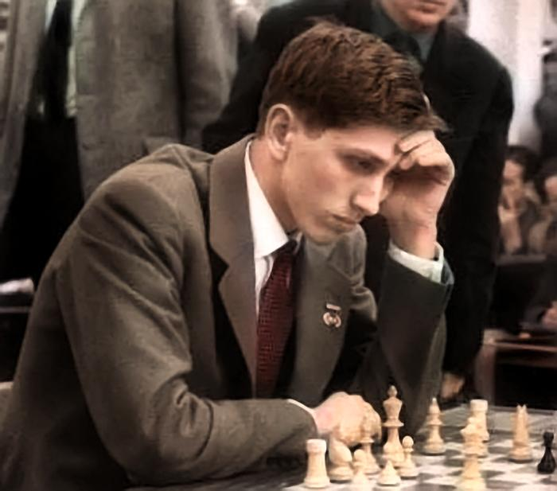

Bobby Fishcer
Chess prodigy
Robert James Fischer (March 9, 1943 – January 17, 2008) was an American chess grandmaster and the eleventh World Chess Champion. A chess prodigy, at age 14 he won the 1958 U.S. Championship. In 1964, he won the same tournament with a perfect score (11 wins). Qualifying for the 1972 World Championship, Fischer swept matches with Mark Taimanov and Bent Larsen by 6–0 scores. After another qualifying match against Tigran Petrosian, Fischer won the title match against Boris Spassky of the USSR, in Reykjavík, Iceland. Publicized as a Cold War confrontation between the US and USSR, the match attracted more worldwide interest than any chess championship before or since. In 1975, Fischer refused to defend his title when an agreement could not be reached with FIDE, chess's international governing body, over the match conditions. As a result, the Soviet challenger Anatoly Karpov was named World Champion by default. Fischer subsequently disappeared from the public eye, though occasional reports of erratic behavior emerged. In 1992, he reemerged to win an unofficial rematch against Spassky. It was held in Yugoslavia, which was under a United Nations embargo at the time. His participation led to a conflict with the US government, which warned Fischer that his participation in the match would violate an executive order imposing US sanctions on Yugoslavia. The US government ultimately issued a warrant for his arrest. After that, Fischer lived as an émigré. In 2004, he was arrested in Japan and held for several months for using a passport that the US government had revoked. Eventually, he was granted an Icelandic passport and citizenship by a special act of the Icelandic Althing, allowing him to live there until his death in 2008. Fischer made numerous lasting contributions to chess. His book My 60 Memorable Games, published in 1969, is regarded as essential reading in chess literature. In the 1990s, he patented a modified chess timing system that added a time increment after each move, now a standard practice in top tournament and match play. He also invented Fischer random chess, also known as Chess960, a chess variant in which the initial position of the pieces is randomized to one of 960 possible positions.
more info